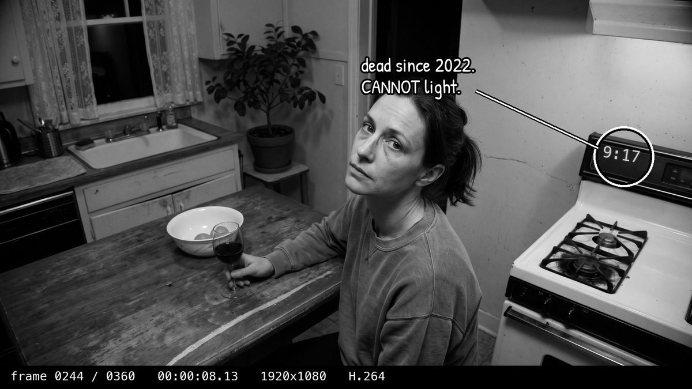
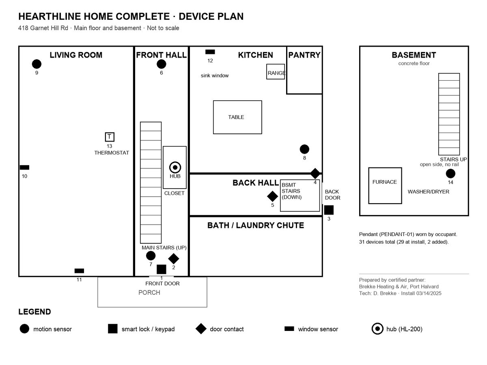
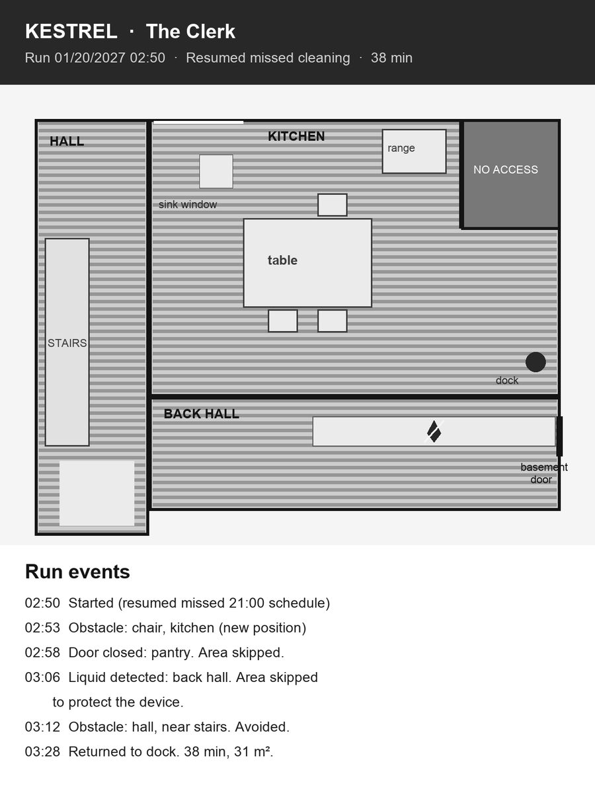

Port Halvard Police Department · Case # PHPD-27-00388
A Detective Maren Holt Thriller by Reena Luiz · Book 2 · a work of fiction
Case file · Reader accessThis file follows the book. The first vote is for readers who've reached the end of Chapter 21; the second, Chapter 31. Nothing on this page names the killer. Everything here is fiction: Port Halvard, Garnet Hill and everyone in them are made up.
You've seen the clip. Port Halvard has made up its mind. Is Maren Holt lying?

You said: It's real. She did it.
Lieutenant Dana Kessler doesn't look up from the printout on her desk. She's holding a chewed blue pen.
"Then you're where half this building was at eight o'clock Monday morning." She turns a page. "Her face. Her voice. Her kitchen. Her case. If I'd never met Maren Holt, I'd say the same." She sets the pen down, exactly parallel to the edge of the desk. "I have met her. That's the problem with evidence, isn't it? It doesn't care who you've met." A pause. "Keep your eye on the clock. Any clock. I'm told that's where they always slip."
You said: It's fake. She didn't.
Travis Ward wipes his hands on a red shop rag and doesn't look at you.
"Yeah? How do you know?" He waits. "That's what I'd like to know. Because five years ago, nobody in that courtroom knew. They looked at my face on a screen and they were sure." He tosses the rag on the bench. "You're right, by the way. I'm just asking you to notice you don't have any proof yet. You've got a feeling about a person." He almost smiles. "Welcome to my side of the table. It's cold over here."
You said: I can't tell, and that scares me
Sarada Nair has her sleeves pulled down over her hands and three monitors going.
"Good," she says. "That's the right answer. That's the only honest answer anybody's given me all week." She drags a cursor across a frame, back and forth. "Everybody who's sure is guessing. They're just guessing loud." She stops on one frame and leans in. "I can't tell either, from the face. Nobody can anymore. So stop looking at the face. Look at everything around it. The face is the part they worked hardest on."
Maren thinks she knows who killed Judge Margaret Tollefsen. Do you?
You said: Erik Tollefsen
Lieutenant Dana Kessler peels a clementine in one long spiral.
"The son. Ninety thousand in debt, a million-three house, an app that says he silenced his mother's alarm while she lay dying, and a story that changed between Wednesday and Thursday." She eats a segment. "Debt and a silenced alert. I've closed cases on less." She wipes her fingers. "Of course, he was in Olympia, and the house has been lying about everything else. So if the house lied about him too, you'll want something better than an app."
You said: Cora Dumalag
Detective Rick Haugen leans back in his chair until it creaks, and offers you a cough drop.
"The nurse. Yeah. Forty grand in the will, a code to the door, she found the body and touched it and pushed in a chair, and she lied to us about who came to the house." He unwraps one for himself. "Nurses know how to make things look natural. I hate that I said that. She fed me lumpia." He sighs. "There's a church full of people who saw her from seven to eleven. Work around that and I'm listening."
You said: Nick Petrakis
Detective Ron Pelletier puts down his Diet Pepsi at a volume that turns heads.
"PETRAKIS! I like it! He lied to everybody, he was in the house, his truck sat down the block with the engine running, and if that judge reopens Ward, guess who everybody looks at for his brother?" He leans in, and drops to merely loud. "Here's my problem. He pays his beer guy by check. He's got a flip phone. Somebody rewrote that house's memory at three in the morning from a console. Show me Nick Petrakis at a console."
You said: Craig Nyberg
Sarada Nair doesn't look up from her laptop.
"Okay." A long pause. "Okay. He lied about Christmas. He's got a scratch and a story about salting his steps. He tried the Ward case. And there's a C on a card behind the pies." She types something and deletes it. "Then you need more than a scratch. You need him in that kitchen at ten to eight, and right now all I can put in that kitchen is a lock that says SVC." She finally looks up. "Find out what SVC means. Not what somebody told you it means."
You said: Maren Holt
Detective Rick Haugen laughs so hard he has to put his coffee down.
"Bold. I like you." He wipes his eyes. "Look, I get it. Her face on TV saying she framed Ward, the judge who was about to reopen Ward dead at the bottom of her stairs, and Maren's initials on the calendar. If I didn't know her, I'd look too." He picks the coffee back up. "But I checked the sign-in sheet. Bethel Lutheran, Tuesday, 7:20 to 8:45, in her own handwriting, sitting with her dad in the dark. Try again, Detective."
You said: Someone else
Walt Holt is having a good day. He folds the Herald to the Jumble and taps it with his pen.
"Someone else. Huh." He thinks about it. "Your mother used to say, when something went missing in the house, don't look for a burglar. Look for who was supposed to be there." He holds up one big finger. "It's always somebody who was supposed to be there. The one nobody wrote down, because why would you? They're always around." He goes back to his Jumble. "Go stand where it happened, Mare. Shoe leather."
Tuesday, January 19. On the left, what the Hearthline cloud said happened in the house (Exhibit 2). On the right, what the little box in the hall closet wrote down for itself while the power was out (Exhibit 8), merged by time. Two honest records of the same evening would line up. These almost never do.
| Time | The cloud | The box in the closet |
|---|---|---|
| 18:31:44 | LOCK-FRONT Locked (Code 2) | LOCK-FRONT Locked (Code 2) |
| 18:40:12 | LIGHT-KITCH On | nothing |
| 18:40:51 | nothing | LIGHT-KITCH On |
| 18:41:05 | THERM-HALL 68F hold | nothing |
| 18:50:34 | nothing | LOCK-FRONT Unlocked (manual, interior thumb-turn) |
| 18:50:41 | nothing | DOOR-FRONT Opened |
| 18:50:58 | nothing | DOOR-FRONT Closed |
| 18:51:20 | nothing | MOT-HALL Motion |
| 18:51:33 | nothing | MOT-KITCH Motion |
| 18:52:47 | MOT-KITCH Motion | nothing |
| 18:58:09 | nothing | MOT-KITCH Motion |
| 18:58:12 | nothing | MOT-HALL Motion |
| 19:00:03 | WIN-LIV-1 Closed | nothing |
| 19:06:29 | MOT-KITCH Motion | nothing |
| 19:12:08 | nothing | DOOR-FRONT Opened |
| 19:12:31 | nothing | DOOR-FRONT Closed |
| 19:12:33 | nothing | LOCK-FRONT Locked (manual, interior thumb-turn) |
| 19:14:46 | nothing | MOT-KITCH Motion |
| 19:21:56 | MOT-HALL Motion | nothing |
| 19:22:40 | MOT-LIV Motion | nothing |
| 19:24:11 | LIGHT-LIV On | nothing |
| 19:31:06 | nothing | HUB MAINS LOST. Battery mode. Uplink unavailable. Buffering. |
| 19:41:05 | THERM-HALL 68F hold | nothing |
| 19:48:52 | nothing | LOCK-FRONT Unlocked (SVC) |
| 19:49:10 | nothing | DOOR-FRONT Opened |
| 19:49:24 | nothing | DOOR-FRONT Closed |
| 19:49:40 | nothing | MOT-HALL Motion |
| 19:50:02 | nothing | MOT-KITCH Motion |
| 19:52:26 | nothing | MOT-KITCH Motion |
| 19:52:29 | nothing | MOT-HALL Motion |
| 19:54:44 | nothing | DOOR-BSMT Opened |
| 19:54:59 | nothing | MOT-BSMT Motion |
| 19:55:13 | nothing | DOOR-BSMT Closed |
| 19:55:31 | nothing | DOOR-BSMT Opened |
| 19:55:44 | nothing | MOT-BSMT Motion |
| 19:56:10 | nothing | MOT-BSMT Motion |
| 19:58:33 | MOT-LIV Motion | nothing |
| 20:00:03 | WIN-LIV-1 Closed | nothing |
| 20:01:37 | nothing | MOT-BSMT Motion |
| 20:03:58 | nothing | MOT-HALL Motion |
| 20:09:12 | nothing | MOT-HALL Motion |
| 20:14:52 | MOT-HALL Motion | nothing |
| 20:15:30 | MOT-KITCH Motion | nothing |
| 20:16:40 | nothing | MOT-KITCH Motion |
| 20:18:21 | nothing | DOOR-FRONT Opened |
| 20:18:49 | nothing | DOOR-FRONT Closed |
| 20:19:05 | nothing | LOCK-FRONT Locked (SVC, keypad, from outside) |
| 20:31:08 | MOT-KITCH Motion | nothing |
| 20:33:46 | MOT-HALL Motion | nothing |
| 20:34:20 | MOT-LIV Motion | nothing |
| 20:41:05 | THERM-HALL 68F hold | nothing |
| 21:00:03 | WIN-LIV-1 Closed | nothing |
| 21:02:58 | MOT-HALL Motion | nothing |
| 21:03:24 | MOT-KITCH Motion | nothing |
| 21:09:51 | LIGHT-KITCH Off | nothing |
| 21:10:36 | MOT-LIV Motion | nothing |
| 21:41:05 | THERM-HALL 68F hold | nothing |
| 21:55:12 | MOT-LIV Motion | nothing |
| 22:00:03 | WIN-LIV-1 Closed | nothing |
| 22:26:40 | MOT-LIV Motion | nothing |
| 22:41:05 | THERM-HALL 68F hold | nothing |
| 22:44:09 | LIGHT-LIV Off | nothing |
| 22:44:31 | MOT-HALL Motion | nothing |
| 22:45:02 | LIGHT-HALL On | nothing |
| 23:00:03 | WIN-LIV-1 Closed | nothing |
| 23:12:57 | MOT-HALL Motion | nothing |
| 23:39:48 | LIGHT-HALL Off | nothing |
| 23:40:30 | MOT-STAIR Motion | nothing |
| 23:41:05 | THERM-HALL 68F hold | nothing |
| 23:41:17 | NOTIFY Sent: Erik T. (app) | nothing |
| 23:43:17 | ESCALATE Monitoring canceled | nothing |
Times end where the evening does, at midnight. Look at the seconds.


If you've read The Second Face, Sarada says it in Chapter 1 of this book, so here it is: the forged exhibit nobody in
Book 1 caught was Exhibit 9, the Vesper access log. The line Sat 11/07 14:02:17 gwhitlock … full-weights export
put Graham Whitlock in the building on a day he spent in Portland at his mother-in-law's seventieth birthday (Book 1, Chapter 23).
And the seconds end in seventeen.
Readers who caught it:
One of the fourteen exhibits in this book's Case File is a forgery that nobody in Port Halvard ever notices. Find it, tell us which exhibit and what gave it away, and your name goes on the list in Book 3's case file. No prizes, just the honor.
Submit to the Hall of FameDon't post the answer anywhere public; let other readers find it.